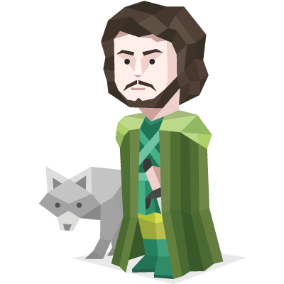

No ambito profissional foi simples determinar que minha carreira seria dentro da área de computação, e mais recentemente decidi que quero iniciar a carreira como um desenvolvedor. Mas permanecer explorando outras áreas da computação ao longo da graduação.
Quanto a minha personalidade, observo como meus principais pontos fortes o esforço, persistência resiliência e trabalho em equipe, gosto muito de desafios, tenho uma tendência de ir até o meu máximo pra alcançar algo que determinei.
Além disso, tratando da vida e ocupações de maneira geral, eu sou muito fã de séries de comédia, ficção e fantasia. Gosto de usar meu tempo livre pra visitar amigos e familiares, jogar online e ler sobre algo que esteja fora do âmbito de computação.
